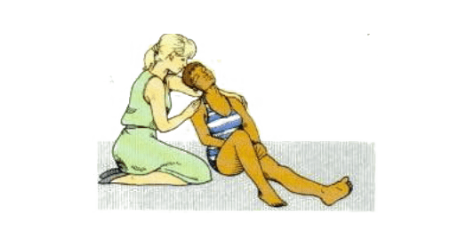

ضربة شمس
-
الاعراض
- الدوخة.
- ارتفاع معدل ضربات القلب.
- التعرض للإغماء.
- الحمى.
- ارتفاع درجة حرارة المصاب
- صداع الرأس.
- تشنج العضلات.
- الغثيان.
- التعرق الشديد أو غياب التعرق.
- ظهور طفح جلدي.
- قيء.
- ضعف عام بالجسم.
-
العلاج
- الاتصال بالإسعاف فورا.
- نقوم بنقل الشخص الذى نشك فى إصابته بضربة الشمس إلى مكان بارد بعيدا عن الشمس ونحاول تبريد جسده بأى وسيلة مثل:
- نضع الشخص فى حوض ملىء بالماء أو تحت دش بارد.
- نرش عليه ماءً باستخدام خرطوم الحديقة.
- استخدام إسفنجات مليئة بالماء البارد ثم عصرها .
- تشغيل المروحة ووضع المصاب أمامها أثناء رش الماء البارد عليه بالبخاخة.
- وضع كمادات الثلج وفوط المياه المبللة على الرقبة وأعلى الفخذ وتحت الإبطين.
- .نقوم بتغطية الشخص باستخدام أقمشة مبللة بالمياه البارد
- اذا كان المصاب واعياً ضعه في وضع نصف جلوس مع اسناد رأسه وكتفيه

- يجب أن يتناول الشخص مياه باردة لو كان عنده القدرة على ذلك ويمكن تناول أى سوائل أخرى بشرط الابتعاد عن القهوة والشاى والمشروبات الكحولية.
- اذا كان المصاب فاقداً وعيه ولا يتنفس افتح ملسك الهواء لديه وتحقق من تنفسه وعمل على انعاشه اذا وجت لزوما لذالك